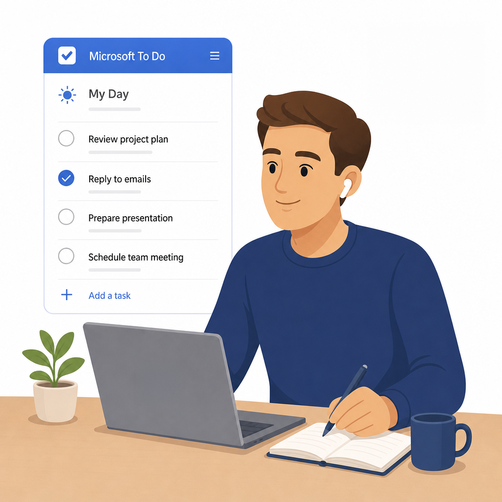

← All Apps

To Do
Help your people take control of their personal workload — with a simple, intelligent task manager that connects to Outlook, Teams and Planner.
Book This Session →Help your people take control of their personal workload — with a simple, intelligent task manager that connects to Outlook, Teams and Planner.
Book This Session →Microsoft To Do is M365's personal task-management app — a simple, smart home for individual tasks and priorities that pulls in flagged Outlook emails, assigned Planner tasks and personal lists across every device. It sits quietly alongside the rest of M365 and becomes the single place a person decides "what am I doing today?".
It's best used for personal daily planning, a My Day focus list, shared household-style lists and tracking follow-ups from email. Every employee benefits, particularly executives, executive assistants, knowledge workers and anyone juggling tasks across multiple systems. To Do solves the universal problem of personal work being tracked in sticky notes, notebook margins and mental lists — replacing it with one cross-device, Copilot-aware task list that keeps the important things in view and everything else quietly captured.

A focused session designed to build real-world skills fast.
What Microsoft To Do is and how it fits into Microsoft 365 as your personal task home. We tour the interface — smart lists, personal lists and the detail pane — and unpack what each smart list does: My Day, Important, Planned, Assigned to Me and Flagged Email.
Creating and managing tasks properly — title, steps, due date, reminder, recurrence and notes — and attaching files so everything you need travels with the task. We mark tasks as important, add them to My Day and use My Day as a daily focus view with its suggestions and nightly reset.
Building a list structure that mirrors how you actually work: creating and organising custom lists, then grouping them into list groups that act as folders. We finish by sorting and filtering tasks within a list so the right work always rises to the top.
Where To Do quietly gathers work from everywhere else — Outlook-flagged emails surfacing in the Flagged Email list, managing tasks alongside email in Outlook, assigned Planner tasks appearing automatically, and tasks flowing in from Teams and Loop components. We also share a list and assign tasks to others, closing with clear guidance on when to use To Do versus Planner.